Sep 4, 2010 · Comments
Hobbies

Las mejores películas son las que provocan que el espectador se implique, se interese y se identifique con los personajes. Es muy complicado, por no decir imposible, generar cierta tensión en una escena si te importa un bledo lo que le ocurra al protagonista. Una pena que hubieran retirado de cartelera Los Mercenarios ya que tuve que asistir a la proyección de Centurión, un perfecto ejemplo de fracaso en llegar al público. Sinceramente, no sé en qué estaba pensando Neil Marshal, director y guionista del largometraje, mientras trabajaba en ella. No se preocupen, no pienso despotricar en una enumeración sin sentido, sigan leyendo y expondré mis razones.
El Imperio Romano trata de conquistar Britania pero una tribu se les resiste, los Pictos (anda, esto parece la historia de Asterix y Obélix). Estos “bárbaros” arrastran a los romanos a una guerra de guerrillas en los que legiones completas caen en emboscadas y asaltos. La novena legión cae y con ella el general Titus Flavius Virilus (Dominic West). Los únicos supervivientes son un grupo reducido de soldados entre los que se encuentra el insulso centurión Quintus Dias (Michael Fassbender). En su viaje de vuelta a casa sufrirán el acoso de una partida de pictos que les dará caza.
La acción y el gore hipervitaminados están a la orden del día, no es raro ver trozos de cráneo saltar por los aires cuando un soldado estampa a un bárbaro contra un árbol. Los hachazos, las flechas y las espadas se clavan en la carne provocando que personajes principales o secundarios mueran sin que nos afecte lo más mínimo. Se los quita de escena antes de que podamos conocer su historia, su causa y que podamos sentir cierto apego por ellos. El ejemplo más evidente es su protagonista, un personaje extremadamente plano del que nada se sabe. Es un espectáculo sanguinario sin sentido en el que es complicado evitar la risa ante tal despropósito. He visto películas cutres de este estilo pero no tratan patéticamente de alcanzar un nivel de epicidad como el de Gladiator.

¿Qué más se puede añadir después del párrafo anterior? Cambiando de tema, me ha sorprendido negativamente que Dominic West (Jimmy McNulty en The Wire) se rebaje a una producción de este calibre. No obstante, West es el único que podría salvarse del resto de actores los cuales se han visto en la necesidad de soltar penosas perlas escritas por el guionista sin demasiado sentido.
Por supuesto, me veo en la necesidad moral de desaconsejar su visionado a cualquiera que tenga en estima su integridad mental. Para cubrir ese lapso de tiempo les recomendaría darle una oportunidad a series como Spartacus o Rome. Cualquier capítulo de ambas juega en otra división lo que hace más triste como producciones de calidad son canceladas mientras Centurión campa a sus anchas en salas de todo el mundo.
Sep 3, 2010 · Comments
Hobbies
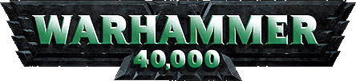
Buenas, me recordarán de otros artículos como “Videojuegos de Warhammer Fantasy”, un repaso sobre las incursiones del famoso wargame de fantasía medieval en el mundo del ocio electrónico. En esta ocasión me dispongo a hacer lo propio con la correspondiente versión futurista, en la que las lanzas se sustituyen por bolters pesados y los carros de combate por Deadnoughts. Mi experiencia con Warhammer 40.0000 se reduce a poseer un regimiento de Marines Espaciales, aunque he tenido la ocasión de probar buena parte de los títulos que se listan a continuación.
Final Liberation es más conocido como el primer videojuego basado en Warhammer 40.000 y apareció tras otras adaptaciones de licencias similares de Games Workshop como Space Crusade o Space Hulk. Fue desarrollado por Strategic Simulations Incorporated, compañía que trabajó en decenas de títulos estratégicos durante los ochenta y los noventa. La característica más notable de Final Liberation es el intento por recrear de manera fidedigna el manual de 40K con un sistema basado en turno, una mecánica bastante delicada.
Podíamos jugar la campaña o combates independientes manejando uno de los dos bandos disponibles (la variedad no era su fuerte): Orcos o Marines Espaciales. Eldars y Tiránidos se aparecían en alguna ocasión dejando entrever una posible expansión que nunca vio la luz. El juego era lo suficientemente complejo como para permitir a jugadores más curtidos desarrollar de forma satisfactoria sus tácticas. Al igual que algún primo suyo basado en Fantasy, el resultado de una batalla de la campaña podía afectar a las condiciones de la siguiente.
Aún es posible hacerse con él a través de la segunda mano en Internet aunque su precio puede ser elevado, es un producto raro. Resulta difícil encontrarlo en buen estado por menos de 20€.
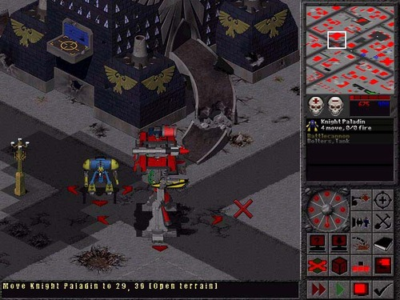
Chaos Gate cambia un poco el estilo de juego aunque permanece en el terreno de la estrategia basada en turnos. En esta ocasión encarnamos al Capitán Kruger cuya misión es dirigir un escuadrón de Marines Espaciales para detener a Lord Zymran, un traidor asociado con seres demoníacos (Marines del Caos). El escenario está dividido en una rejilla de casillas por las que moveremos a nuestros marines contando con un número determinado de acciones por turno.
De nuevo, se incita al jugador a pensárselo dos veces antes de actuar ya que las unidades pueden ganar experiencia al sobrevivir a la batalla. Se trata de una característica interesante y que proporciona una dimensión táctica adicional y a largo plazo. Así mismo, son reseñables las unidades adicionales que aparecen basadas en el trasfondo de los Marines como varios tipos de vehículos.
Al igual que su predecesor, la única manera de conseguirlo es a través de un servicio de anuncios por Internet. Su precio puede llegar a ser incluso más elevado que el de Final Liberation.

Rites of War tiene un sabor diferente que lo hace distinguible del resto al estar basado en el motor de Panzer General II. En esta ocasión la trama gira alrededor de una invasión de Tiránidos (unos bichos muy feos similares a los Alien de Ridley Scott). Por suerte, tenemos la oportunidad de controlar por primera vez a los Eldar, los elfos del futuro. Los deseos de los Eldar por recuperar su tierra perdida se interseccionan con el de los humanos por acabar con la amenaza Tiránida por lo que deberán colaborar.
Los modos de batalla rápida y el multijugador nos permiten controlar al resto de facciones presentes. La crítica lo calificó con una media (calculada a ojo) de notable por lo que no podemos hablar de un juego de baja calidad. Si queremos una copia tendremos que desembolsar algo menos de 10€.
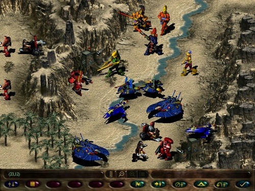
Cuatro años tuvieron que pasar hasta que apareció Fire Warrior, un curioso punto de inflexión. Los derechos de la saga pasaron a THQ que decidió, erróneamente, lavarle la cara. Desde entonces ya se intuía la moda tan radical que se aproximaba, la de los shooters en primera persona. Fire Warrior es un FPS en el que encarnamos a un guerrero Tau llamado Kais cuyo deber es proteger a su líder de los Marines Espaciales y las fuerzas del Caos.
Recuerdo que fue un título muy esperado por su “novedoso” planteamiento pero se llevó más de una bofetada en críticas. Sin ir más lejos en Metacritic aparece puntuado con un 47 en la versión de PC aunque obtuvo un digno 64 en la de PS2 (no me lo explico). Un auténtico despropósito, la piedra en el camino de la licencia. En mis pesadillas aún puedo ver los puzzles absurdos, la mala calidad técnica y las decenas de bugs. No merece la pena aunque si alguien desea suicidarse de una manera absurda puede comprarlo baratuno. Me llama la atención que una minoría de usuarios trate de venderlo a 50€, lo nunca visto desde el timo de la estampita.
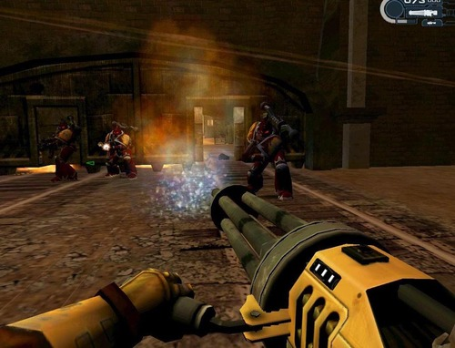
Afortunadamente la saga se recuperó rápido y tomó el camino de los juegos de estrategia en tiempo real. En esta ocasión hablamos de un auténtico juegazo que cumplió su papel de ofrecer un espectáculo en el plano de la estrategia de ciencia ficción, de hecho fue considerado el mejor juego del año dentro de su género. La complejidad considerable de su trama denotaba la madurez que estaba alcanzando la saga lo cual siempre es de agradecer por los seguidores más fieles.
Como en la mayoría de ocasiones, no se nos ofrecían todos los ejércitos de la saga de forma que sólo podíamos controlar Marines Espaciales, Marines del Caos, Orcos y Eldars. Más tarde se publicaron 3 expansiones las cuales presentaban razas adicionales (Necrones, Guardia Imperial, Hermanas de la Batalla y Eldars Oscuros). Recuedo que quedé impresionado por su excelente calidad técnica, hoy en día atrasada, claro está.
Su jugabilidad se basaba en controlar poco a poco puestos estratégicos para obtener una mayor cantidad de recursos, algo parecido a lo que ocurre en Company of Heroes. Dejaba de lado aspectos como la economía o la diplomacia para centrarse en el combate y la manera de afrontarlo. Aunque se haya lanzado su segunda parte les recomiendo hacerse con él, su precio es de risa.
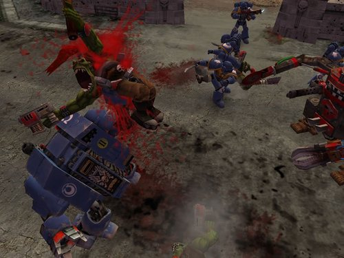
No tenía constancia alguna de la existencia de Glory in Death aunque por otra parte es lógico al estar destinado a una plataforma tan poco exitosa como lo fue N-Gage. El título se basaba en combates estratégicos por turnos, al igual que en los comienzos de la saga. Una funcionalidad que me ha sorprendido ha sido la posibilidad de jugar contra un amigo a través de Bluetooth.
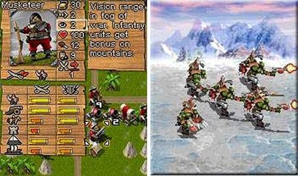
La desarrolladora RedLynx se encargó de esta incursión de los Marines en consolas portátiles que, de nuevo, se basa en el modelo de turnos del juego original. Un título algo más elaborado aunque algo maltrecho por la crítica, sobre todo por la mala interfaz. Destacó por ser accesible, algo lógico al estar dirigido al público de las portátiles. Disponía de juego online en red local o a través de Wi-Fi para hasta 8 jugadores aunque los servidores deben estar desiertos o cerrados en la actualidad.
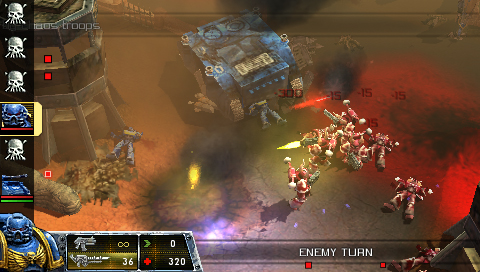
Sin duda, la consolidación de la saga en el terreno de la estrategia en tiempo real. El notable éxito de su primera entrega lo avalaba y el público esperaba algo grandioso. Siendo realistas, su carácter es continuista aunque presenta considerables mejoras con respecto a su predecesor, sobre todo en el apartado gráfico. Desde luego, la moda no es ofrecer elementos innovadores entre entregas consecutivas de la misma saga.
Jugablemente se centra en las tácticas de combate, ideal para los que opinen que controlar la economía es de nenazas. La cobertura y el equipo empleado contra determinadas unidades son los elementos que deciden los enfrentamientos. Dawn of War II tampoco está exento de expansiones, actualmente cuenta con Chaos Rising y un pack gratuito llamado The Last Stand. Recientemente se anunció una nueva expansión llamada Retribution.
Dawn of War II es un excelente juego para jugar a través de la red. Es el mas reciente y, por tanto, la actividad en sus servidores aún es importante. Investigando un poco no es complicado encontrarlo por menos de 20€. Quizás es la compra ideal para los que no tengan un PC a la última o suficiente dinero en el bolsillo para hacerse con Starcraft II.
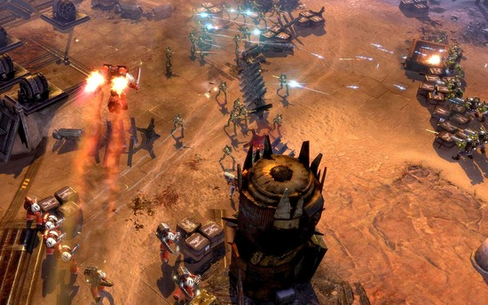
Space Marine es el futuro de la licencia Warhammer 40K en el mundo de los videojuegos. Está siendo desarrollado por Relic Entertainment y su fecha de lanzamiento aún no ha sido concretada aunque apunta a comienzos del 2011. Peligrosamente abandona el RTS para acercarse a los Action RPG. Se nota que el PC no produce tantos beneficios como antaño ya que han decidido ampliar el mercado y lanzar el juego en consolas.
Se ha visto un trailer con escenas ingame de infarto, no estoy seguro de cómo encajarán la mecánica de juego en el universo de Warhammer 40K pero reconozco que tiene una pintaza estupenda. Hasta que no me puse a recolectar información para el artículo poco sabía sobre el juego y eso que está generando bastante expectación.
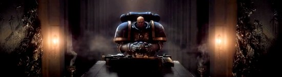
Para terminar
Sin duda, el recorrido de Warhammer 40.000 en el mundo del ocio electrónico es más amplio, rico y prometedor que el de su hermano Warhammer Fantasy. Desconozco el porqué del éxito de la versión futurista sobre la fantástica aunque he disfrutado mucho con las dos.
Puede que la extensión de este artículo sea excesiva aunque no he podido evitar extenderme cuando hablo de todos estos juegos. Espero que les guste este repaso, mientras indagaba he descubierto datos de lo más interesantes. Sin duda, ha merecido la pena.
Aug 30, 2010 · Comments
Computing
Uno de los mayores problemas de Android es la segmentación de versiones que sufre. No es raro ver usuarios con la 1.5 Cupcake instalada mientras que los más afortunados se encuentran en la 2.0 Froyo. Como seguramente sepas, esto se debe a numerosos factores como el retraso que imponen las operadoras o capas de interfaz que han de ser actualizadas aunque esto da contenido para otro artículo. Hace más de un año me hice con una HTC Magic a través de Vodafone y, desgraciadamente, aún estoy abandonado en la 1.6 Donut. Si no fuera por las ROMS cocinadas me vería condenado a no poder actualizar mi teléfono de por vida.
Llevaba cierto tiempo queriendo instalar una ROM modificada pero, al pensar que mi teléfono podría convertirse en un bonito posavasos tremendamente caro, me entraban escalofríos. En internet circulan centenares de confusos tutoriales con dependencias entre sí y conceptos que no tengo tiempo para investigar. ¿Acceso root, recovery mode, brick? ¡Qué narices es eso! No puedo perder una semana guerreando con el teléfono para poder usarlo en condiciones. Finalmente en una tarde de tiempo libre me lancé al vacío y, picando de varios sitios de internet, he dado con un sistema seguro y sencillo. Si eres de esos que quieres un tutorial para pasar una Magic de la versión Android 1.6 a la última 2.2, estás en el lugar acertado. No tengas miedo y adelante.
Conseguir acceso root
Los usuarios de GNU/Linux conocerán en qué consiste el acceso root, el resto simplemente debéis saber que es el usuario con el mayor nivel de privilegios. Si no lo tienes muy claro, hay un artículo de El Androide Libre que lo explica. En los terminales con Android 1.5 era sencillo conseguir acceso root pero la cosa se complicaba con la llegada de la 1.6. Hace poco apareció un nuevo método increíblemente sencillo. Los pasos se enumeran a continuación:
- Habilitar la instalación de aplicaciones externas: Ajustes → Aplicaciones → Orígenes desconocidos.
- Descargar la aplicación Universal Androot 1.6
- Copiamos Universal Androot a la tarjeta SD del teléfono.
- Abrimos el instalador con nuestro explorador de ficheros. ES File Explorer o Astro File Manager son perfectamente válidos.
- Ejecutamos Universal Androot, seleccionamos nuestro terminal y seleccionamos el botón para rootear.
- Voilá, HTC Magic 1.6 con acceso root.
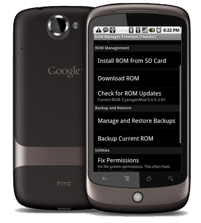
La magia de ROM Manager
ROM Manager es una aplicación que ayuda a gente torpe como yo en tareas peligrosas como hacer o restaurar copias de seguridad, instalar ROMS o modificar el recovery. Si trasteas con tu teléfono haciendo el ganso por cuenta propia te mereces lo que te pase, así que corre a instalarla (tienes el código QR correspondiente). Existe una versión de pago (3,99$) que amplía la lista de ROMS disponibles pero a nosotros nos basta con la versión gratuita.
Copia de seguridad
El sentido común nos dicta que antes de arrojarnos al vacío sería recomendable hacer una imagen completa: ROM actual, aplicaciones instaladas y configuración personal. Los pasos son los siguientes:
-
Ejecutamos ROM Manager
-
Seleccionamos Copiar ROM actual
-
Nos dirá que debemos modificar el recovery (sistema de respaldo con el que podemos arrancar el teléfono) y aceptamos gustosamente.
-
Le damos un nombre a la copia de seguridad y al confirmar se reiniciará nuestra HTC Magic.
-
Tras finalizar el proceso volverá a reiniciarse con normalidad.

Instalar CyanogenMod 6, la hora de la verdad
En este momento es probable que una gota de sudor frío te recorra la frente porque vamos a instalar nuestra nueva y flamante ROM con Android 2.2. He elegido CyanogenMod por ser una de las más famosas, con más comunidad, soporte y estar en la lista de ROMS en la versión gratuita de ROM Manager. Si estáis de acuerdo seguid los pasos que se listan a continuación, en caso contrario, siempre puedes descargar la ROM que desees y usar la opción “Instalar ROM desde la SD”.
- Ejecutar ROM Manager
- Seleccionar la opción Descargar ROM → CyanogenMod → CyanogenMod 6.0.0
- Se nos ofrece la opción de seleccionar si deseamos el paquete de aplicaciones de Google ya que por problemas de copyright no están disponibles por defecto.
- Al confirmar se reiniciará nuestra HTC Magic, entrará en modo recovery, instalará CyanogenMod y volverá a reiniciarse.
- Si todo a ido bien deberá aparecer el logo de CyanogenMod y arrancar con normalidad. Es posible que el primer inicio tarde bastante. En este paso se pondrá aprueba tu paciencia y sangre fría.
¡Socorro!
Si ocurre algún problema durante el proceso no debes entrar en shock ya que tu teléfono se salvará. En caso de llegar a este terrorífico punto sigue los siguientes pasos:
- Enciende el teléfono y mantén pulsado los botones de cuelgue y home al mismo tiempo para entrar en el famoso modo recovery.
- Reinstala una ROM descargada o recupera la copia de seguridad que, espero, hayas realizado en apartados anteriores.
- Todo volverá a la normalidad.
**Editado: **El lector eldire aconsejó que si el terminal se quedaba bloqueado en la copia de seguridad deberíamos flashear Clockworkmode utilizando ROM Manager y seleccionar el modelo Ion/Touch. En el caso de que, al instalar la ROM, vuelva a ocurrir, la solución pasa por volver a flashear Clockworkmode como estaba al principio. Espero que esto solucione los problemas que están teniendo algunos usuarios.
¡Proceso finalizado!
¡Enhorabuena, eres el orgulloso usuario de una HTC Magic con Android 2.2! Ahora deberías instalar las aplicaciones que tenías antes, configurarlas y hacer una nueva copia de seguridad por si las moscas porque nunca se es lo suficientemente paranoico con estos menesteres. Respira tranquilo.
Espero que te haya sido útil este tutorial, ojalá ayude a alguien a evitar el mar de confusión que puede llegar a ser la red en este aspecto. Si encuentras cualquier fallo no dudes en dejar un comentario y actualizaré el artículo.
Aug 28, 2010 · Comments
Hobbies
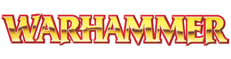
Apenas era un pipiolo cuando comencé a interesarme por el mundo de Warhammer, a partir de entonces pasé una buena temporada reclutando mi ejercito Alto Elfo, pintando o librando batallas. De eso hace ya casi ocho años pero antes de mutar en la entrañable figura del abuelo cebolleta voy a centrarme en el objetivo de este artículo, hacer un repaso sobre los videojuegos existentes basados en el mundo de Warhammer Fantasy.
“Warhammer, el juego de las batallas fantásticas” fue lanzado en 1983 por Games Workshop. Para el deleznable ser que no lo conozca se trata de un juego de estrategia por turnos en el que los jugadores enfrentan sus ejércitos formados por regimientos de miniaturas que han de montar y pintar ellos mismos. Es un juego bastante complejo y profundo que permite desarrollar tácticas elaboradas. En efecto, es de esos juegos para frikazos cuyo manual tiene un grosor respetable. El Viejo Mundo y sus facciones tuvieron bastante éxito por lo que Games Workshop, ni corta ni perezosa, se dispuso a llevar la licencia al terreno de los videojuegos y aquí se muestra su recorrido.
El primer juego basado en Warhammer Fantasy fue desarrollado por Mindscape y pertenecía al género de los RTS (Real Time Strategy). Encarnábamos al comandante mercenario Morgan Bernhardt siendo nuestra misión detener a los Skavens. Destacaba su considerable dificultad producida por la pérdida de bajas de una batalla a otra. El jugador se veía obligado a planificar los encuentros con cuidado ya que los refuerzos para enfrentamientos futuros podrían no ser comparables con las bajas sufridas.
Me resulta especialmente curioso el uso de unas rudimentarias tres dimensiones en tiempos en los que escaseaban dentro de este género. Tiene una pinta retro de lo más atractiva. Actualmente la manera más sencilla de hacerse con él es a través del mercado de segunda mano.
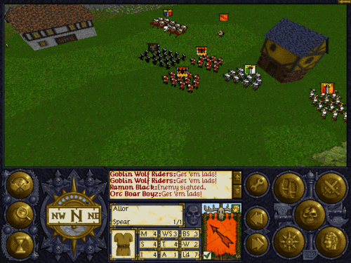
La clara secuela de Shadow of the Horned Rat (también desarrollada por Mindscape) da un salto importante al hacer uso de las primeras tarjetas gráficas con aceleración 3D (Voodoo 3dfx) lo que nos permite rotar la cámara y hacer zoom con total libertad. En esta ocasión Morgan Bernhardt tiene la misión de detener una invasión de Orcos en el Imperio aunque se descubre que todo es consecuencia de la resurrección de un rey No Muerto.
Controlamos regimientos de distintos tipos: infantería, caballería, artillería… Aunque también podemos encontrar guerreros individuales como criaturas sobrenaturales, magos o héroes. En esta ocasión entra en juego un elemento fundamental en el mundo de Warhammer, la psicología. Las unidades que sobreviven enfrentamientos ganan experiencia y pueden ser equipadas con mejores armas o armaduras.
Como curiosidad cabe añadir que se planeaba una expansión que nunca vio la luz. Al igual que su predecesor, es posible encontrarlo en páginas como Ebay, de hecho suelen venderse juntos.
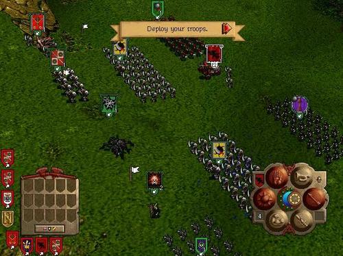
No todo iban a ser productos aceptables, siempre hay una piedra en el camino y en esta ocasión es Battle for Atluma, desarrollado por Namco Bandai. Dieron un giro drástico y adaptaron el juego de cartas intercambiables WarCry que, a su vez, se basa en el mundo de Warhammer. PSP no es precisamente la plataforma idílica para crear juegos de estrategia en tiempo real aunque los aficionados no suelen tolerar este tipo de cambios en el planteamiento de sus sagas.
En Metacritic tiene una puntuación de 55 con lo que ya nos hacemos una idea. En su momento se le achacó el no añadir nada nuevo al juego de cartas original, ser aburrido y la dificultad para leer el texto de las cartas en la pantalla de PSP. Lógicamente aquellos insensatos que cayeron en la trampa de comprarlo lo están vendiendo como locos por la red.
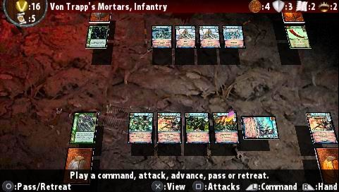
Black Hole Entertainment de la mano de Namco Bandai devolvió la licencia al camino de la rectitud con este título de estrategia en tiempo real de una apariencia completamente actual. Una pena que no estén todas las facciones disponibles sino que únicamente podemos ponernos al mando de: Altos Elfos, Imperio, Hordas del Caos o Skavens. El juego se compone de dos campañas en el modo multijugador y el siempre demandado modo multijugador local o a través de la red.
Fue muy criticado por los jugadores más tradicionales al no contar con todos los ejércitos y no ser completamente fiel al transfondo de Warhammer. Está vez recibió un 73 en Metacritic ya que provocó división de opiniones en los medios. Algunos valoraron su calidad en los efectos gráficos mientras que otros echaban de menos más profundidad en los combates. En su momento le dediqué cierto tiempo y disfruté bastante con el.
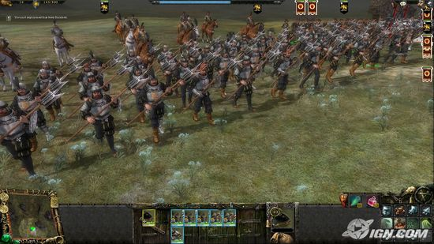
Battle March es el nombre de la expansión de Mark of Chaos la cual añadía como razas jugables a los Elfos Oscuros y a los Orcos. La opinión general coincide en que mejoraba la jugabilidad en diversos aspectos. Es posible encontrar tanto esta expansión como el título general en perfecto estado o completamente nuevos en varias tiendas online.
Lo más curioso es que Battle March fue lanzado en X-Box 360 siendo uno de los pocos juegos de estrategia en tiempo real de la consola (junto con EndWar y Halo Wars). Como era fácilmente previsible, el sistema de control echó a perder lo que podría haber sido una experiencia de juego estupenda.
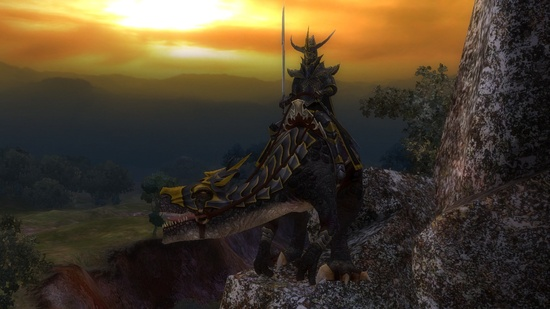
Llegamos a la última incursión de Warhammer Fantasy en el mundo del ocio electrónico y como no podía ser de otra forma, lo hace a modo de MMORPG. Lo desarrolló Mythic Entertainment y ofrece a los jugadores 6 razas a elegir: Enanos, Imperio, Altos Elfos, Pieles-verdes, Caos y Elfos Oscuros aunque el número de clases y la personalización del avatar potencia las posibilidades. Se basa en el concepto Realm VS Realm (RvR) que pone en conflicto a varios bandos de jugadores según su procedencia. Destaca por no exigir al jugador demasiadas horas de juego para disfrutar del mismo, lo cual es de agradecer en un género tan duro como el del MMO.
Recibió buenas críticas en general y aunque no es rival para World of Warcraft, el peso pesado del género, cuenta con una comunidad activa de tamaño respetable.
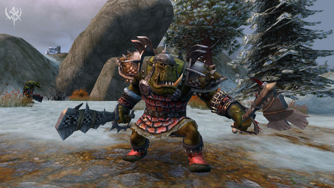
Conclusiones
Warhammer Fantasy goza de apariciones dignas de admiración en el mundo de los videojuegos pero como la mayoría de licencias tiene puntos negros en su expediente. Varias de sus entregas son productos de coleccionista y muchos sentirán cierta nostalgia al hacerles una visita. Espero que os haya parecido mínimamente interesante este pequeño tocho que acabo de soltar, al menos yo me lo he pasado bien recopilando la información y mis recuerdos.
Quizás algún día me anime a hacer el equivalente en Warhammer 40.000.
Aug 27, 2010 · Comments
Projects

En un post anterior hablé sobre cómo me introduje en la programación en Python con PyGTK y Glade desarrollando Tiny Backup. Antes que eso ya había experimentado un acercamiento al lenguaje de la serpiente en un ejercicio no extremadamente útil aunque curioso, el resultado fue Twigraph.
Twigraph
Twigraph es un pequeño script que utiliza un wrapper de la API de Twitter y una biblioteca para trabajar con el lenguaje Dot de Graphviz. El script toma nuestro usuario y contraseña para producir una imagen PNG con el grafo de nuestros followings y followers. Nuestro usuario es el nodo central del cual parten flechas hacia nuestros following Las flechas recibidas corresponden a los followers. No es nada del otro mundo sino una pequeña práctica personal que ha quedado como una mera anécdota.
En un principio pensé ahondar en la recursividad, de manera que fuese posible ver qué amigos estaban conectados entre sí. Esta característica es ofrecida por Twitter actualmente pero en el momento de la creación de Twigraph no era así. El problema era el límite de peticiones que impone Twitter sobre APIs externas, el número de enlaces crecía exponencialmente y las excepciones saltaban constantemente.[

Hay que reconocer que el nombre de este wrapper de la API de Twitter para Python no es nada original. No obstante es tremendamente sencillo de utilizar y está bien documentado. Con este wrapper podemos postear tweets, ver nuestro timeline o comenzar a seguir a otro usuario. En definitiva, tendremos acceso a la inmensa mayoría de las posibilidades de Twitter desde Python y con ejemplos de muchas de ellas.
Graphviz y pydot
Graphviz es un software increíblemente potente para la generación de gráficas y diagramas liberado bajo Commons Public License (CPL). Podemos generarlas en forma de imágenes o en un formato vectorial para incluirlo en cualquier tipo de documentos como LaTeX. Cuenta con una sintaxis propia llamada dot con la que se definen los grafos a generar. Una herramienta muy potente de la que sólo conozco la superficie.
Pydot es el wrapper de Graphviz para Python (aunque existen para multitud de lenguajes). Esta API es un poco más compleja y profunda por lo que puede resultar más difícil utilizarla. No obstante, si sólo deseamos las funciones básicas una ojeada a la documentación y a sus ejemplos bastará.
Como siempre, si se quiere aprender un lenguaje o el uso de una API lo mejor es lanzarse a desarrollar un pequeño script o proyecto. Quien tenga curiosidad puede descargar Twigraph aunque aviso que no se trata el éxtasis de la elegancia.
[Descargar twigraph.py